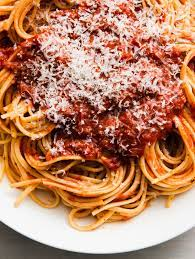

Spaghetti Recipe

A classic Italian dish best served with garlic bread!
Ingredients
- Groud Beef
- Onion
- Minced garlic
- Green Pepper
- Crushed tomatoes
- Tomato paste
- Tomato sauce
- Oregano
- Basil
- Salt
- Black pepper
Directions
-
Combine ground beef, onion, garlic, and green pepper in a large saucepan
over medium-high heat. Cook and stir until meat is browned and crumbly
and vegetables are tender, 5 to 7 minutes. Drain grease.
-
Stir diced tomatoes, tomato sauce, and tomato paste into the pan. Season
with oregano, basil, salt, and pepper. Simmer spaghetti sauce for 1
hour, stirring occasionally.
-
Combine all ingredients into pot with your choice of noodles and serve!
Back to recipes